Rose Emmons

Truthfully I'm not as well-versed in WordPress as I would like. The authentication functions WordPress provides (e.g. wp_signon, wp_logout, wp_create_user, and wp_update_user) are certainly welcomed by those who have tried to roll their own authentication system in the past on other platforms.
I use Git branches to test a new features, to easily revert to a previous state (should something get foobared), and to track work history.
Speed! The web browser can process CSS much faster than JavaScript. In my book, CSS is for presentation. Page animation falls under this category. CSS3 support varies across browsers, so unfortunately some things still need to be done in JavaScript. My rule of thumb is: CSS when you can and fall back to JavaScript when you must.
My favorite project thus far has been the redesign project I did for Las Vegas Fulfillment back in 2010. It afforded me the opportunity to re-brand a company from scratch.
Hunter Qualitative stood out as being Needmore's least-balanced work on the color scale. Perhaps later the client will be open to contrasting color blocks? Like having the orange color block as the background for the nav, h1, and h2, with a muted blue for the rest of the page. All other pages can have the nav in a contrasting color block as well. Just one inexperienced chick's two cents.